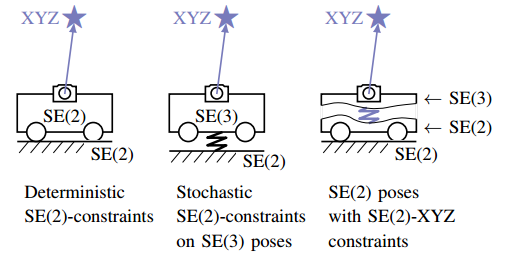

由Fan Zheng等发表在ICRA2019上的工作“Visual-Odometric Localization and Mapping for Ground Vehicles Using SE(2)-XYZ Constraints”，利用了AGV小车的主要应用场景为较为平坦的地面上这一特性，将载体位姿解算限定于SE(2)平面。同时，考虑到实际地形中的起伏造成的out-of-SE(2)现象，将该扰动作为噪声项加入视觉重投影残差，构成了所谓的SE(2)-XYZ约束。另外地，本工作还加入了轮速里程计预积分项，实现了视觉与里程计的紧耦合。

就具体实现来说，本工作使用了较为经典的，基于ORB-SLAM的框架与实现，即沿用了ORB-SLAM的前端、线程结构等。然后在优化方面进行了自己的改动，包括SE(2)限定与SE(2)-XYZ约束、里程计预积分等。
场景针对性的创新与收益
本工作的针对性与创新性都是基于其所聚焦的应用：室内（仓库）场景下的AGV定位问题。这个场景也体现在了作者所选择的测试数据数据集上。在这样的场景下，AGV所行进的地面往往较为平坦，且不会涉及坡道与颠簸。另一方面，AGV往往配置有轮速里程计，且所运行的坚实地面可以很大程度上保证打滑等情况发生。
因此，本文作者选定将载体运动直接限制在平面上，并将离面扰动（out-of-SE2）视为噪声加入三维地图点的重投影误差中。相较于以往的工作（Stochastic SE(2) constrain），本工作的优化维度更低，更为直接与高效。换言之，由于“载体只会在二维平面内移动”这一假设在本问题中基本成立，那么就没有必要对载体位姿进行6-dof的建模与优化，只要进行3-dof的建模与优化即可，这样便减少了计算量并提高了精度。更进一步地，由于里程计测量及其积分（或严格来说，预积分）也只能获取在平面内的结果，因此载体位姿的平面建模假设就给更为合理，为与里程计的预积分紧耦合带来便利之处。
不足之处
然而，于此同时，此工作的主要局限性也在于这个“载体只会在二维平面内移动”很强的假设上。首先，显而易见地（同时也是符合逻辑地），本算法无法适应存在显著三维地形的场景，如坡道等。其次，本方法实际上来讲是一种过约束（over-constrained）系统，并以此换取了特定场景下的更高精度。因而在某些情况下这种过约束可能会压缩系统的解空间，导致解的跳变或无解。这种情况可能会发生在视觉系统进行re-localization等情况下。